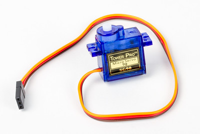

Un servomotor (normalmente llamado simplemente “servo”) es un dispositivo similar a un motor de corriente continua que tiene la capacidad de ubicarse en cualquier posición dentro de su rango de operación, y mantenerse estable en dicha posición. Consiste en un motor eléctrico, un juego de engranajes y una tarjeta de control.
